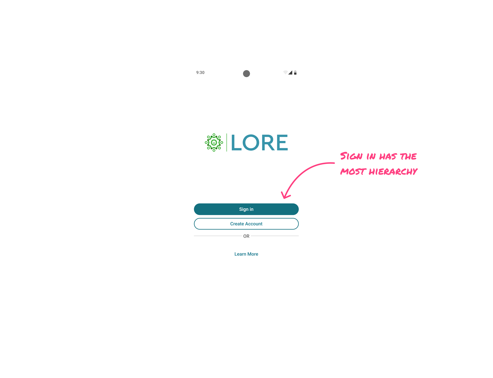
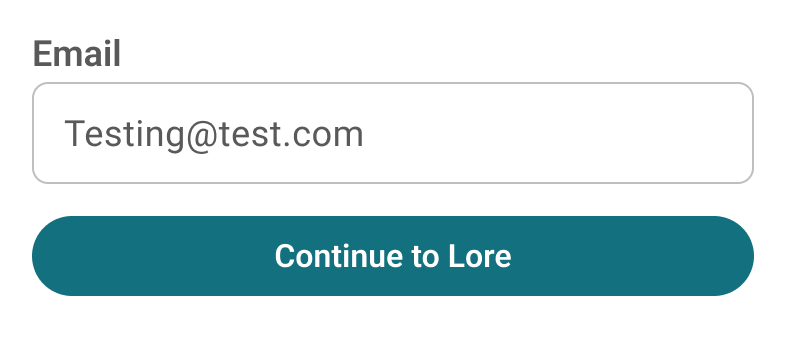
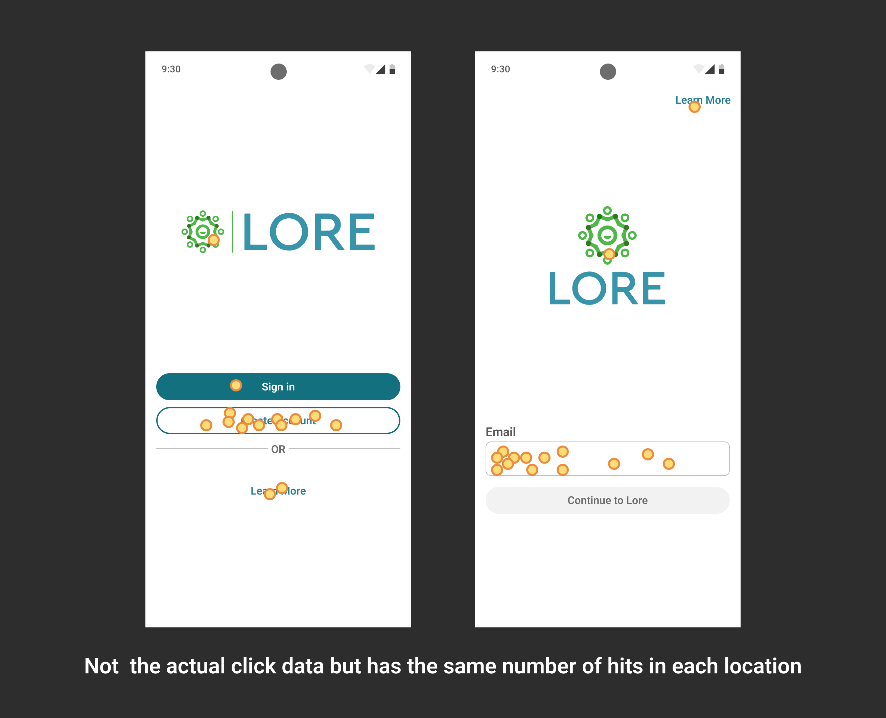

Problem
Customer care started getting calls that didn’t fit any script.
Callers were stuck at sign-in — but they weren’t locked out. They didn’t have accounts. They were certain they did, and before an agent could help with anything, they had to talk the caller out of a belief about their own history with us. A slow, uncomfortable conversation, every time, before any actual support began.
The calls all traced back to the same place. A new client had brought us a 65+ population, and we’d started sending welcome emails to thousands of people who had never heard of us.
Chasing the Copy
My first suspect was the marketing materials. Somewhere in there, I figured, we were telling people they had an account.
The emails were personalized. Name, plan, the works. But I read every line — no “your account is ready,” no “log back in.” The copy never claimed an account existed.
The belief wasn’t something we said. It was something the email’s existence implied. To this audience, a company that knows your name is a company that already has your file. A personalized message from a company you’ve never heard of doesn’t read as marketing. It reads as a file someone already has on you.
Chasing the Hierarchy
My second suspect was the screen itself.

The actual choice was Sign in or Create account, and every arriving user had to correctly classify themselves before walking through one.
Sign in was the primary button — and on its own merits, that was backwards. Lore isn’t an app you sign into constantly. Once you’re in, you stay in; most users get pushed out once or twice a year. The most common person standing at this door wasn’t a returning user. It was someone arriving for the first time.
So I played with the hierarchy. Demoted Sign in. Promoted Create account.
Every version was better than what we had. And every version still asked the same question: which kind of user are you? These callers weren’t confused — they were confident. Confidently wrong. No arrangement of buttons fixes a confident wrong answer, and I couldn’t look at any of my mockups and honestly believe the calls would stop.
The Reframe
I took the problem to the team, and a developer said: what about identifier-first authentication?
If you’ve signed into Gmail, you’ve walked through it. You type your email — and that’s the whole ask. The system checks whether it knows you. If it does, you get a password screen. If it doesn’t, you get account creation. You never answer the question do I have an account? because the system answers it for you.
That was the exit. Our users were failing a question we didn’t need to ask.
One email field. One button: Continue to Lore.

The system already knew which kind of user this was. No reason to make the user guess.
What It Cost Us
Typo risk. Fat-finger your address as a returning user and you land in account creation.
Autofill does most of the typing on that screen, so it’s rarer in practice than on paper. And it fails into territory care already knows — they merge accounts routinely, since users move between clients. The worst case had a well-worn fix, not a dead end.
An unfamiliar pattern for established users. Same math as the button hierarchy: nobody signs into Lore often enough to build a habit worth protecting. The screen has to work best for the first time, not the fiftieth. Familiarity was the cheaper thing to trade.
Test
I ran a first-click test against the old screen. 30 participants, one day, $60.
Imagine you received an email and you just clicked a button that said “I’m ready to sign up.” Then, this screen appeared. Where would you click first?

One honest limit: the task tells participants they’re signing up. It couldn’t recreate the false belief that caused the calls — no one-day test could. This measured clarity, not the belief itself.
Even so, one participant on the old screen clicked Sign in with no reason to.
Confidence came in slightly lower on the new screen. Only slightly, and it tracks — a single button that doesn’t announce where it leads gives people less to confirm their choice against. Not enough to stop on.
At n=30 this was directional, not conclusive. It pointed the same way the call logs already did, which was enough to ship on.
Outcome
Zero customer care calls about this issue across the next several months of new onboardings.